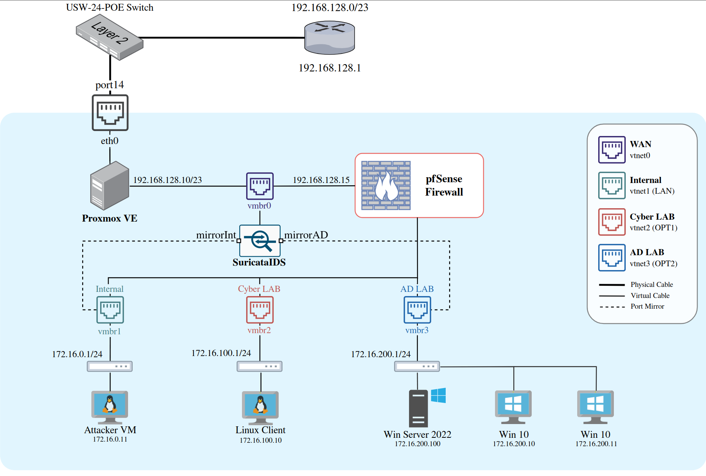
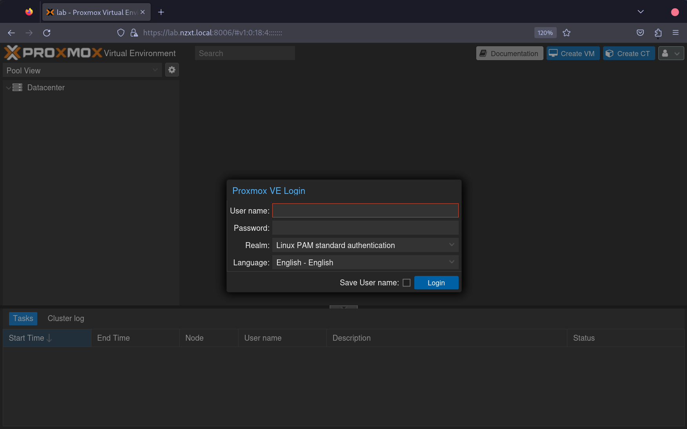
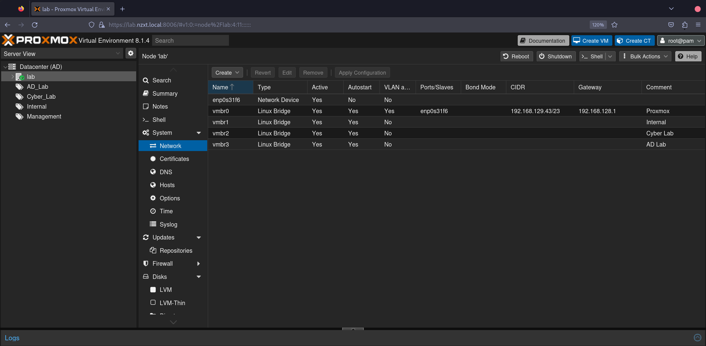
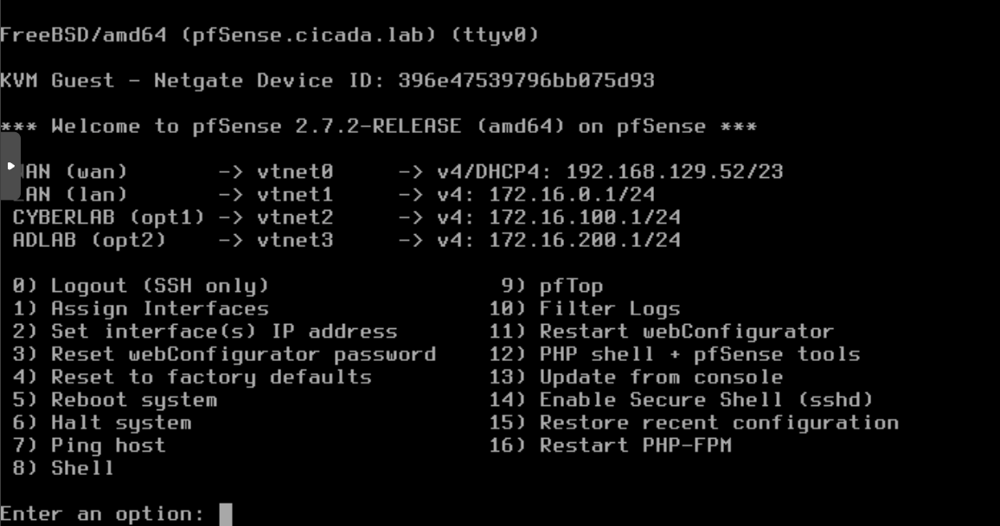
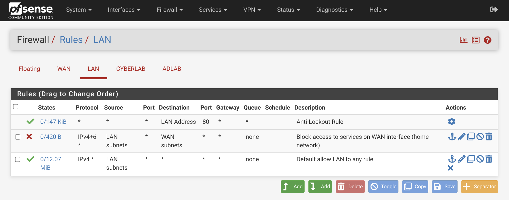
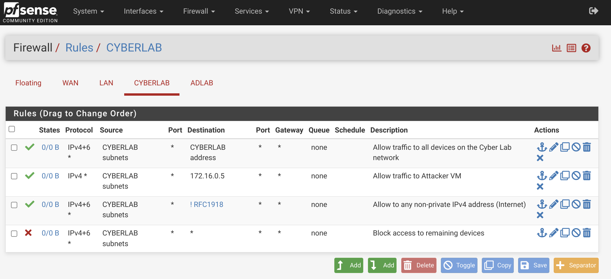
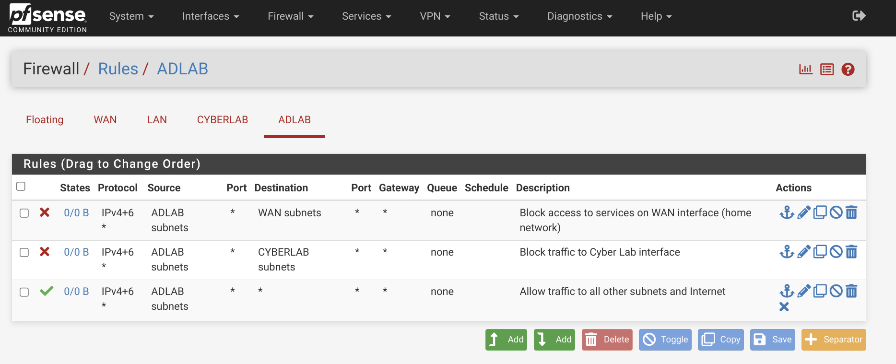

Active Directory Home Lab with Proxmox - Part 1
In this post, I'll walk you through setting up my personal homelab - a project that serves both as a hands-on learning experience and as a future reference. While this documentation is partly a note to my future self, it's also a guide for anyone interested in gaining a deeper understanding of system administration, including networking, firewall configuration, and policy management. Ultimately, the goal is to create an environment where I can safely experiment with Active Directory (AD) misconfigurations and vulnerabilities, culminating in a simulated attack on my own lab.
Network Setup
The backbone of this homelab is a segmented network architecture that isolates various virtual machines (VMs) from my home network using a firewall. We'll use pfSense as our firewall solution and Proxmox for managing the VMs. I’ll keep the initial setup straightforward, focusing on getting the basic system up and running. Here’s a schematic overview of the homelab architecture:

We’ll establish three distinct networks behind the pfSense firewall:
- Internal Network: For regular machines (
172.16.0.1/24) - Cyber LAB: A playground for experimenting with vulnerable machines and data (
172.16.100.1/24) - Active Directory LAB: A dedicated Windows-only AD environment (
172.16.200.1/24)
pfSense will act as the gateway (router) and firewall for our homelab, so it should always be the first thing you boot up when using the lab.
Later on in this series, we will also add our own Intrusion Detection System (IDS) with Suricata. This will be a host that captures all traffic from your networks of choice and alerts for suspicious events.
System Requirements
To ensure smooth operation, here’s what you’ll need:
- A 64-bit multi-core CPU (minimum 4 cores) with virtualization support
- 16GB of RAM
- 250GB of disk space
- A bootable Proxmox VE drive (ISO)
Proxmox Setup
Installing Proxmox is relatively simple, so I’ll skip the step-by-step details but you can go ahead and follow their official Getting Started. After a successful installation, you should be able to access the login portal via the IP address you specified.

Once logged in, we’ll create two new OVS bridged interfaces alongside the default vmbr0 Linux bridge interface. Your CIDR and gateway might vary depending on your network configuration.

For better organization, consider creating new pools for your networks. This can be done by navigating to Datacenter > Permissions > Pools > Create. When you start creating VMs, you can assign them to one of these pools.
To upload ISOs to Proxmox go to lab > local (lab) > ISO Images > Upload.
Setting Up PfSense
Download the latest stable ISO of pfSense and create a new VM in Proxmox by clicking the blue box in the top right corner. Select the uploaded pfSense ISO and proceed with the default settings.
After creating the VM, assign it to our previously created bridge interfaces by going to Hardware > Add Network Device and selecting vmbr1. Repeat this process for vmbr2 and vmbr3.
Complete the pfSense installation and reboot the system. During the initial setup, you’ll be prompted to configure the network interfaces. Here’s how I set it up:
- Should VLANs be set up now?
n - Enter the WAN interface name:
vtnet0 - Enter the LAN interface name:
vtnet1 - Enter the Optional 1 interface name:
vtnet2 - Enter the Optional 2 interface name:
vtnet3
Select option 2 and WAN:
- Configure IPv4 address WAN interface via DHCP?:
n - Enter the new WAN IPv4 address:
192.168.129.52 - Enter the new WAN IPv4 subnet bit count:
23 - Enter the new WAN IPv4 upstream gateway address:
192.168.128.1 - Configure IPv6 address WAN interface via DHCP6?:
n - Enter the new WAN IPv6 address:
Enter - Do you want to enable the DHCP server on WAN?:
n - Do you want to revert to HTTP as the webConfigurator protocol?:
n
Change the above settings according to your network setup (yours might be different).
Select option 2 and LAN:
- Configure IPv4 address LAN interface via DHCP?:
n - Enter the new LAN IPv4 address:
172.16.0.1 - Enter the new LAN IPv4 subnet bit count:
24 - For a LAN, press
for none: Enter - Configure IPv6 address WAN interface via DHCP6?:
y - Do you want to enable the DHCP server on LAN?:
y - Enter the start address of the IPv4 client address range:
172.16.0.10 - Enter the end address of the IPv4 client address range:
172.16.0.254 - Do you want to revert to HTTP as the webConfigurator protocol?:
n
Select option 2 and OPT1:
- Configure IPv4 address OPT1 interface via DHCP?:
n - Enter the new OPT1 IPv4 address:
172.16.100.1 - Enter the new OPT1 IPv4 subnet bit count:
24 - For a LAN, press
for none: Enter - Configure IPv6 address OPT1 interface via DHCP6:
n - For the new OPT1 IPv6 address question press
Enter - Do you want to enable the DHCP server on OPT1?:
y - Enter the start address of the IPv4 client address range:
172.16.100.10 - Enter the end address of the IPv4 client address range:
172.16.100.254 - Do you want to revert to HTTP as the webConfigurator protocol?:
n
Select option 2 and OPT2:
- Configure IPv4 address OPT2 interface via DHCP?:
n - Enter the new OPT2 IPv4 address:
172.16.200.1 - Enter the new OPT2 IPv4 subnet bit count:
24 - Configure IPv6 address OPT2 interface via DHCP6:
n - For the new OPT2 IPv6 address question press
Enter - Do you want to enable the DHCP server on OPT2?:
n - Do you want to revert to HTTP as the webConfigurator protocol?:
n
We do not setup DHCP as we will let the Domain Controller handle this for us later on.

After setting up pfSense, you can create new hosts and assign them the vmbr1 NIC on the LAN. From any host on the 172.16.0.1/24 network, you can access the pfSense web interface for further configuration.
Configuring Firewall Rules
Let’s set up some basic firewall rules to control traffic between our networks and the outside world. Log into the pfSense dashboard using the credentials admin:pfsense and change the following settings during the setup process:
- Step 2: Uncheck override DNS
- Step 4: Uncheck the
Block private networks from entering via WANoption. Because this is not a real WAN.
Complete the remaining steps by filling out your preferred configuration settings. We can also rename our interfaces that were created by pfSense on the interface tab.
It is useful to assign a static IPv4 address for our attacker VM. This will make it easier for us to apply firewall rules to interfaces that should only be able to reach this VM. To do this go to Status > DHCP Leases and click on the + icon to assign a static IP to the Attacker VM. Note that this IP address should be inside the internal LAN address space.
Next go to Firewall > Aliases and make a new alias with the following options:
- Name:
RFC1918 - Description:
Private IPv4 Address Space - Type:
Network(s) - Network 1:
10.0.0.0/8 - Network 2:
172.16.0.0/12 - Network 3:
192.168.0.0/16 - Network 4:
169.254.0.0/16 - Network 5:
127.0.0.0/8
WAN Rules
Go to Firewall > Rules > WAN > Add and make a new rule with the following options:
- Action:
Pass - Address Family:
Ipv4 - Protocol:
TCP - Source:
WAN subnets - Destination:
Address or Alias - <pfSense IP> - Description:
Allow pfSense portal access from home network
Replace the <pfSense IP> field with the real internal IP address of the pfSense VM (in my case 192.168.129.52). This can be viewed at the start menu on the pfSense VM.
LAN Rules
Go to Firewall > Rules > LAN > Add and make a new rule with the following options:
- Action:
Block - Address Family:
Ipv4+IPv6 - Protocol:
Any - Source:
LAN subnets - Destination:
WAN subnets - Description:
Block access to services on WAN interface
The final LAN configuration will look something like this:

This makes sure that the internal networks behind the WAN cannot reach our home network. If you want to connect from a device on your home network, you can add another allow rule at the top for that specific IP.
Cyber Lab Rules
Go to Firewall > Rules > Cyber Lab > Add rule to end:
- Address Family:
IPv4+IPv6 - Protocol:
Any - Source:
Cyber Lab subnets - Destination:
Cyber Lab address - Description:
Allow traffic to all devices on the Cyber Lab network
Add another rule to end:
- Source:
Cyber Lab subnets - Destination:
Address or Alias - 172.16.0.5 - Description:
Allow traffic to Attacker VM
Add another rule to end:
- Protocol:
Any - Source:
Cyber Lab subnets - Destination:
Address or Alias - RFC1918 (Select Invert match) - Description:
Allow to any non-private IPv4 Address (Internet)
Add another rule to end:
- Action:
Block - Address Family:
IPv4+IPv6 - Protocol:
Any - Source:
Cyber Lab subnets - Description:
Block access to remaining devices
The final Cyber LAB configuration will look something like this:

These rules ensure that devices in the Cyber Lab can communicate with each other, access the internet, and interact with the Attacker VM.
AD LAB Rules
Go to Firewall > Rules > AD Lab > Add rule to end:
- Action:
Block - Address Family:
IPv4+IPv6 - Protocol:
Any - Source:
AD Lab subnets - Destination:
WAN subnets - Description:
Block access to services on WAN interface (home network)
Add another rule to end:
- Action:
Block - Address Family:
IPv4+IPv6 - Protocol:
Any - Source:
AD Lab subnets - Destination:
Cyber Lab subnets - Description:
Block traffic to Cyber Lab interface
Add another rule to end:
- Address Family:
IPv4+IPv6 - Protocol:
Any - Source:
AD Lab subnets - Description:
Allow traffic to all other subnets and Internet
The final AD LAB configuration will look something like this:

This setup ensures that devices within the Active Directory domain can communicate freely with each other, while remaining isolated from other networks.
Now we need to restart pfSense to persist the firewall rules. From the navigation bar select Diagnostics > Reboot. Once pfSense boots up you will be redirected to the login page.
Conclusion
Congratulations! You’ve successfully set up your firewall rules and segmented your network. The next step is to create virtual machines and add them to the appropriate network segments by selecting the correct bridge interface in Proxmox. In the following part of this series, we’ll configure the Active Directory environment and introduce common vulnerabilities for further experimentation.